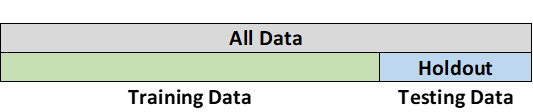

Holdout Method
The holdout method is the simplest form of cross-validation. For this method, the test data is "held out" and not used during training. Hold-out validation avoids the overlap between training data and test data, and therefore gives a more accurate estimate of the performance of the algorithm. The downside is that this procedure does not use all the available data and the results are highly dependent on the choice for the training/test split. (Tang, 2008)
